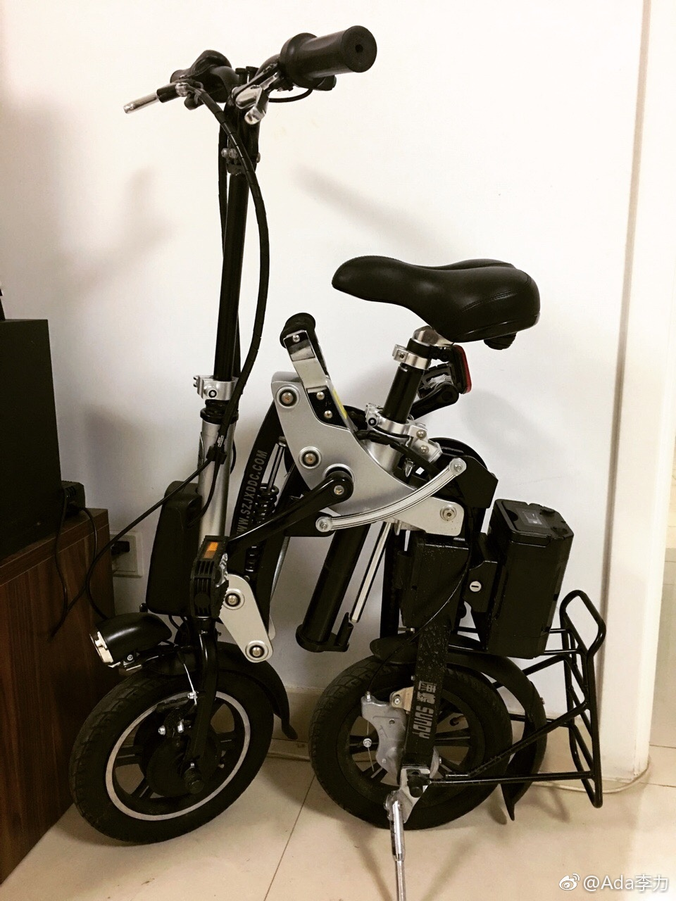
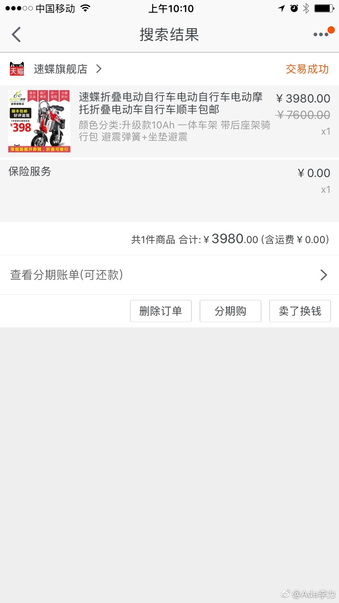

两年前买了个速碟电动车，号称一秒完成折叠。骑了几次后，发现创业园这种公共办公室不允许存放车，除了去健身房骑过几次后，基本是闲置近两年。
现在新办公室位置是个尴尬的距离，走路太远，公交没有直达，开车的话停车费太贵，加上一路有坡，骑自行车也费力，只有电动车可选了。
原来网上购买的速碟旗舰店已无踪影，看起来是不做了。挺可惜，这款车设计真不错，就是价格高了些，两年前是四千元买的。
现在新办公室位置是个尴尬的距离，走路太远，公交没有直达，开车的话停车费太贵，加上一路有坡，骑自行车也费力，只有电动车可选了。
原来网上购买的速碟旗舰店已无踪影，看起来是不做了。挺可惜，这款车设计真不错，就是价格高了些，两年前是四千元买的。
- 
- 